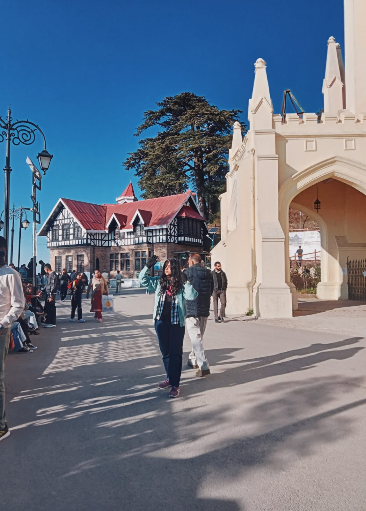

IMFROMATION
Simla was all forest when the first Europeans came to these hills in 1820s.
There were two or three dilapidated shepherd's huts and a small "Hanuman temple" situated on the Jakhoo Hill.
The Europeans sought permission on the Raia of Keonthal, from whose state much of simla was later carved out, to build residences. Captain (later Major) Charles Kennedy was the Political Agent of the British Government posted in these hill states. He built the first house and the estate known as Kennedy House in late 1820s. Later Lord Amherst, the Governor General came to Simla for a summer trip in the year 1827 and stayed in the Kennedy House. By 1830s about sixty houses were raised for the British Visitors and Simla became a health resort for them.
ARCHITECTURE
It is designed in the neo-Gothic style. The church is lit at night to illuminate it.
The church contains five fine stained glass windows. One represents the Christian virtues of Faith, Hope, Charity, Fortitude, Patience, and Humility
The chancel window was designed by Lockwood Kipling (father of Rudyard Kipling). The pipe-organ of Christ Church is the largest in the Indian subcontinent; it was installed in September 1899.[3] Among the church's holdings are a great collection of books and ancient scriptures..
View of Himalayas from Manali Monthly precipitation varies between 31 mm (1.2 in) in November and 217 mm (8.5 in) in July. On average, some 45 mm (1.8 in) of precipitation is received during winter and spring months, increasing to some 115 mm (4.5 in) in summer as the monsoon approaches. The average total annual precipitation is 1,363 mm (53.7 in). Manali experiences snowfall predominantly between December and the beginning of March. MUST SEE
Christ Church, Shimla, is the second oldest church in North India, after St John's Church in Meerut. Worship is conducted in Hindi and English.[1] Presently, Rev. Sohan lal is the Presbyter-In-Charge (Priest/ father of Christ Church, The Ridge Shimla.